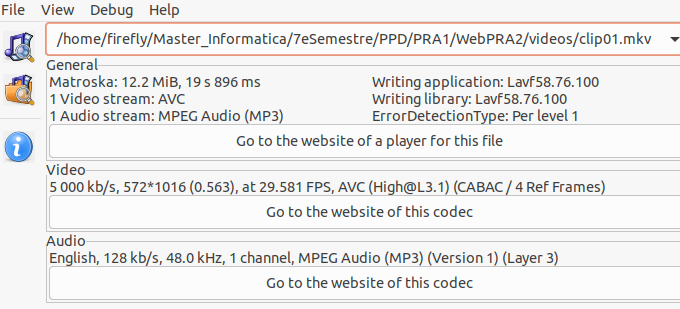
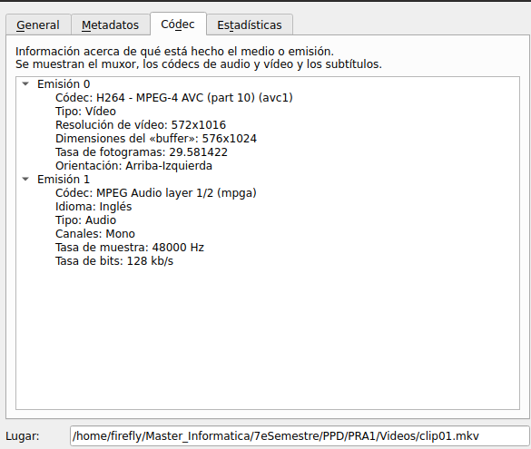
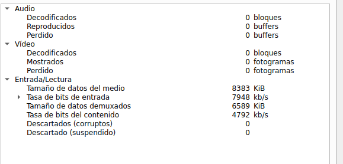
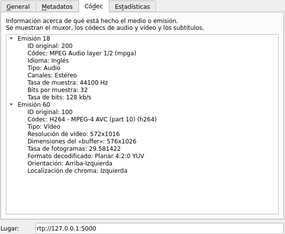
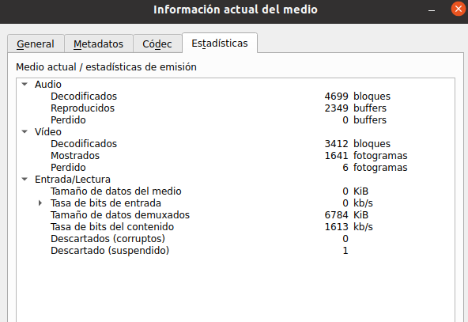

EXERCICI 2 -PRÁCTICA PPD UOC MAIG 2024
Tasca 2.1
Genera un clip de vídeo de qualitat HD d’uns 20 segons de durada (o descarrega’l de la web) que posseeixi moviment (quelcom equivalent al clip de futbol que he usat d’exemple). Sigui qui sigui el seu format, converteix-lo a MP4 amb Avidemux amb els següents valors i l’anomenarem clip01. La codificació de sortida serà MPEG4 AVC i a VIDEO OUTPUT-CONFIGURACIÓ selecciona com a mode de codificació TASA DE BITS MEDIA-DOS PASADAS (per mantenir la qualitat) i 5000 Kbps. Com format d’àudio, MP3 (lame) i com a contenidor, MKV. Inclou aquests clips en el lliurament de la pràctica. Confirma amb MediaInfo que Avidemux ha realitzat la feina correctament.
A continuació es presenta el video demanat anomenat clip01 codificat i configurat segons les característiques demanades a la tasca.
Si la reproducció falla per falta de compatibilitat mkv amb el navegador pots baixar l'arxiu mkv aquí.
I a la següent figura (figura 3.) es mostra a captura del mediainfo del arxiu. El valors que es mostren a la figura coincideixen amb els demanats a la pràctica: 5000 kbps, audio mp3, contenidor Matroska, video AVC
Figura 3.
Tasca 2.2
Configura una emissió repetitiva i una recepció del clip01 amb els mateixos valors emprats al clip de futbol. Al VLC d'emissió, menú EINES-INFORMACIÓ DEL CÓDEC-CÓDEC (a Mac: FINESTRA- INFORMACIÓ MULTIMÈDIA-DETALLS DEL CÓDEC), indica els còdecs amb els quals diu que es va generar el fitxer emmagatzemat. A ESTADÍSTIQUES indica la TAXA DE BITS DE CONTINGUT que està llegint de disc, és la necessària per a una reproducció correcta del contingut (és un valor canviant, de manera que pren un valor mitjà aproximat).
Segons es desprén de la informació donada per VLC i mostrada en captura de pantalla a la figura 4 els còdecs amb els que es va generar el fitxer emmagatzemat van ser H.264 AVD (part 10).
Figura 4.
La taxa de bits de contingut al moment de la captura es de 4792kps. S'ha intentat agafar un valor mitja donat que el valor va canviat especialment al principi i al final del video. Com es va indicar a la tasca 2.1 el vìdeo es va generar amb un kbps de 5000. Es lògic esperar doncs que la taxa de bits rondi aquest valor. En efecte seria la necesaria per una correcta reproducció del vìdeo. La baixada d'aquest valor per sota dels 5000 kbps de mitajan fa que es talli el vìdeo com pasa al final del loop de reproducció.
Figura 5.
Tasca 2.3
al VLC de recepció, mitjançant EINES-INFORMACION DEL CODEC-CÓDEC (a Mac: FINESTRA-INFORMACIÓ MULTIMÈDIA-DETALLS DEL CÓDEC) confirma que el stream està codificat en els formats de vídeo i àudio seleccionats. A ESTADÍSTIQUES indica la TAXA DE BITS DE CONTINGUT a la qual està arribant el stream (pren un valor mitjà aproximat).
Segons es desprén de la informació donada per VLC i mostrada en captura de pantalla a la figura 6 els còdecs del fitxer rebut van ser H.264 AVD (part 10).
Figura 6.
La taxa de bits de contingut al moment de la captura es de 1613kps. Es un valor que només s'actulitza al inici del loop de reproducció.
Figura 7.
Tasca 2.4
si realitzes una pausa en el VLC emissor, quants segons triga en pausar-se el vídeo al receptor? Per què? Torna-ho a posar en reproducció.
Tasca 2.5
Calcula aproximadament la compressió que el VLC d'emissió està realitzant al transcodificar el fitxer emmagatzemat a stream. Realitza una captura de pantalla de l'escriptori amb els dos VLC en marxa i les seves finestres amb les estadístiques de cadascun obertes, i insereix la captura en el document en el qual escrius les respostes d'aquesta pràctica.
Tasca 2.6
Enfocant-nos en la transmissió en viu d’un stream de vídeo mitjançant un servei de cloud CDN, aquests ofereixen múltiples modes de distribució, com per exemple streaming de baixa latència per entorns de mínim retard, streaming per OTT, etc... fins i tot interactiu!.